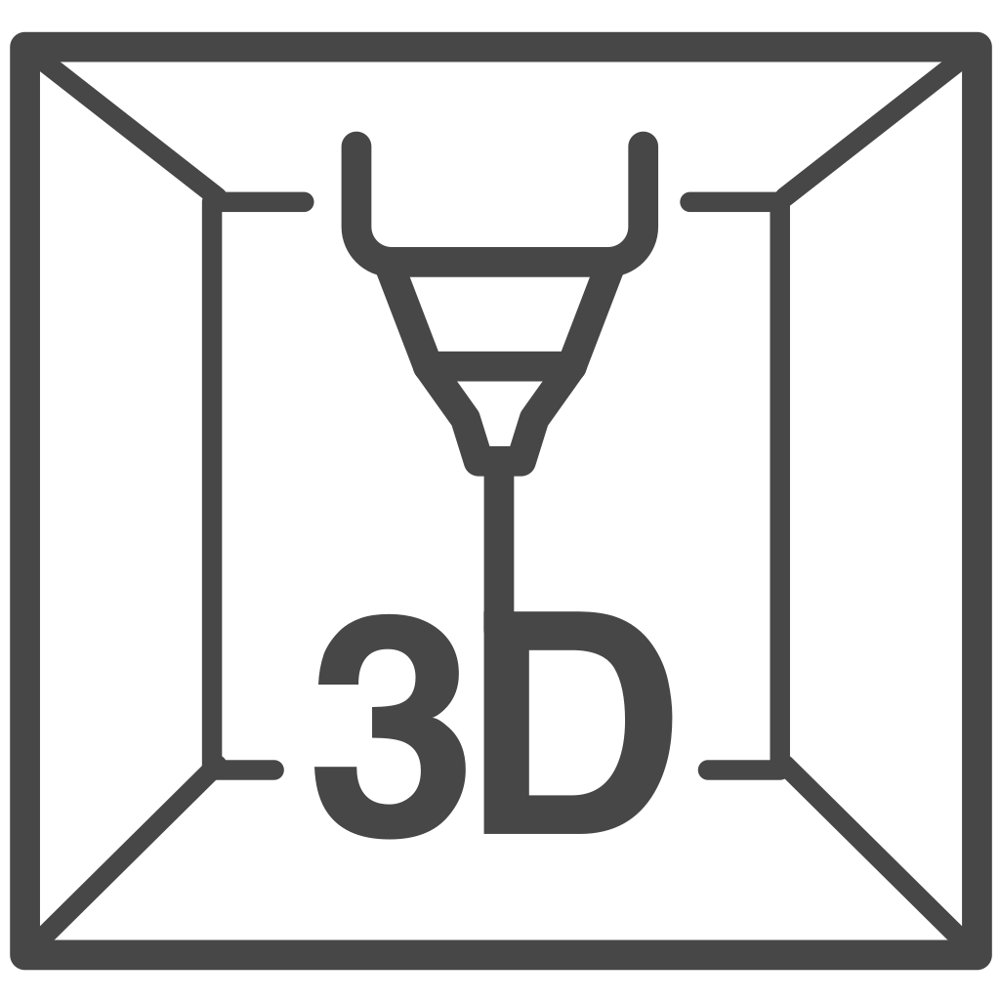
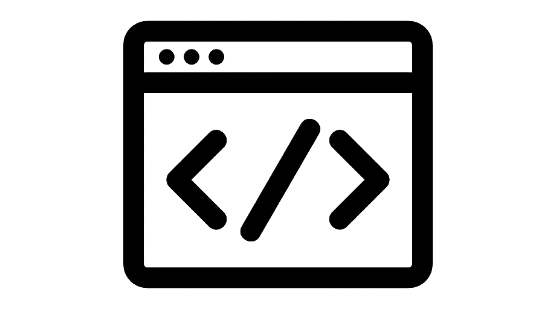
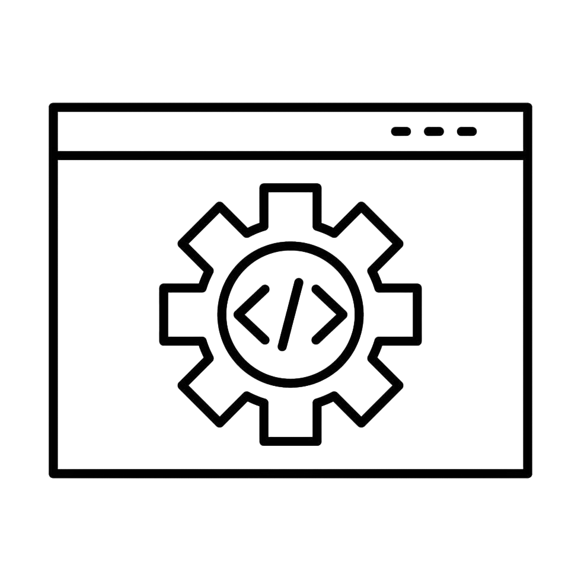
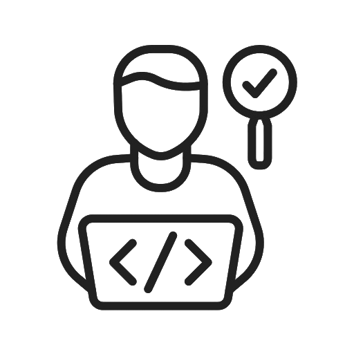
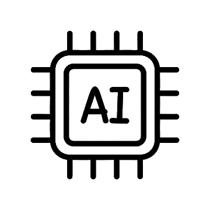

Аддитив инженер — это специалист, который проектирует и «печатает» 3D-объекты любой сложности (от деталей самолётов до имплантатов), управляя послойным наращиванием материала. Ты научишься: Создавать 3D-модели, подбирать материалы (пластик, металл, керамика), настраивать оборудование для послойной печати и оптимизировать процесс для промышленности, медицины или прототипирования.

Frontend-разработчик — это специалист, отвечающий за внешний вид, интерактивность и удобство сайта или приложения, то есть за всё, что видит и с чем взаимодействует пользователь. Ты научишься: Оживлять сайты с помощью HTML, CSS и JavaScript, создавать удобные интерфейсы, а также работать с фреймворками (например, React или Vue), чтобы сайт был красивым и понятным для пользователя.

Backend-разработчик — это программист, который создаёт «невидимую» серверную часть сайта: логику работы, базы данных, хранение информации и безопасность. Ты научишься: Писать серверную логику, работать с базами данных (SQL), создавать API для обмена данными и обеспечивать безопасность приложений, чтобы всё работало «под капотом» сайта.

Тестировщик (QA инженер) — это «охотник за ошибками», который проверяет программы в действии, находит неполадки (баги) и помогает сделать продукт надёжным перед выпуском. Ты научишься: Искать ошибки в программах (баги), составлять чек-листы, писать автотесты, проверять работу приложений на разных устройствах и доказывать, что продукт готов к релизу.

Инженер ИИ-технологий — это разработчик, который создаёт интеллектуальные системы, обучающие нейросети распознавать образы, предсказывать события, генерировать тексты и изображения или управлять роботами. Ты научишься: Обрабатывать большие данные (Data Science), строить и обучать нейросети (TensorFlow, PyTorch), работать с компьютерным зрением, NLP (обработка естественного языка) и внедрять модели ИИ в реальные продукты.
